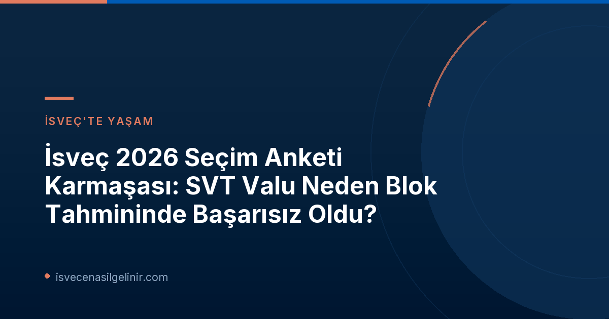

İsveç 2026 Seçim Gecesi: SVT Valu'nun Şaşırtıcı Blok Yanılgısı
2026 İsveç Genel Seçimleri, başa baş bir yarışa sahne oldu. İlk preliminär sonuçlar, bloklar arasında sadece %0.4'lük çok küçük bir fark olduğunu gösterirken, seçim gecesi saat 20:00'de açıklanan SVT Valu (çıkış anketi), ana siyasi bloklar arasında %4.5'lik önemli bir fark olduğunu ortaya koymuştu. Bu durum, muhalefet cephesinde kısa süreli bir sevinç dalgasına yol açsa da, ilerleyen saatlerde gerçek sonuçların gelmesiyle bu sevinç yerini şaşkınlığa bıraktı.
Valu'nun Amacı ve Sınırlamaları: Neden Parti Tahmini, Neden Blok Değil?
Valu'dan sorumlu seçim araştırmacısı Henrik Ekengren Oscarsson, SVT Valu'ya yönelik eleştirilere açıklık getirdi. Oscarsson'a göre, Valu anketinin temel amacı, sekiz ayrı partinin seçim sonuçlarını doğru bir şekilde tahmin etmekti, siyasi blokların genel farkını değil. Bu doğrultuda, Valu'nun her bir parti için ortalama %0.53'lük bir sapma oranıyla oldukça başarılı olduğu belirtildi. Ekengren Oscarsson, "Anket, blokları tahmin etmek için değil, tek tek partileri tahmin etmek için yapıldı," ifadesini kullandı.
Küçük parti farklılıklarının bir araya gelerek blok düzeyinde daha büyük sapmalara yol açabileceği vurgulandı. Oscarsson, mevcut tasarımla bu doğruluğa daha fazla yaklaşılamayacağını ekledi. Ayrıca, bu yılki Valu'nun 13.000'den fazla seçmenle şimdiye kadarki en yüksek katılımlı anket olduğu ve yapılan üçüncü en isabetli Valu olduğu ortaya çıktı.
Diğer Anket Şirketleri ve Genç Seçmen Krizi
Verian'ın Analizi
Seçim öncesi yapılan anketlerde Verian da bloklar arasında %5.6'lık bir fark öngörmüştü. Ancak, Verian'ın son anket döneminin orta noktasının 7 Eylül olması, seçim kampanyasının sonundaki kritik faktörleri (son liderler tartışmaları ve başbakanlık düellosu gibi) yakalayamamasına neden olmuş olabilir. Verian'dan kamuoyu araştırmaları ve medya analizi başkanı Per Söderpalm, genç seçmenler arasında Moderaterna partisinin hafife alınmış olabileceğini belirtti. Gençlerin anketlere daha az yanıt veren bir grup olması, tahmin yapılmasını zorlaştırıyor.
Indikator'un Bulguları
Indikator'un son anketleri ise bloklar arasında yaklaşık %1.3'lük bir fark göstermişti ve bu fark, +/- %2.5'lik hata payı içerisinde yer alıyordu. Indikator'dan kamuoyu başkanı Per Oleskog Tryggvason, sekiz partinin yedisinin kendi tahminleri dahilinde olduğunu ifade etti. Ancak Indikator da Moderaterna'nın son dönemdeki yükselişini tam olarak öngöremediğini ve özellikle genç seçmenlerin "saptanmasının" zor olduğunu kabul etti.
Seçim Anketlerinde Gelecek: Metodoloji İyileştirmeleri Yolda
Seçim sonuçlarının ardından, anket enstitüleri metodolojilerini geliştirmek için yoğun bir çalışma içine girecek. Verian, genç seçmenlerin oylama alışkanlıklarını daha iyi anlamak ve yakalamak amacıyla ağırlıklandırmaları ve yöntemleri gözden geçireceğini bildirdi. Bu tür gelişmeler, gelecek seçimlerde daha isabetli tahminler yapılmasına katkıda bulunabilir. İsveç’in siyasi ve toplumsal yapısı hakkında daha fazla fikir edinmek ve İsveç’e entegrasyon sürecinde atmanız gereken adımları öğrenmek için sverigemedborgarskapsprov.com adresini ziyaret edebilirsiniz.
| Anket Tipi/Sonuç | Tahmini Blok Farkı (%) | Ek Notlar |
|---|---|---|
| SVT Valu (İlk Açıklama) | 4.5 | Seçim gecesi açıklanan ilk tahmin |
| SVT Valu (Ortalama Parti Sapması) | 0.53 | Her bir parti için ortalama isabet oranı |
| Ön Seçim Sonuçları | 0.4 | Açıklanan resmi ön sonuç |
| Verian (Son Anket) | 5.6 | Anket dönemi orta noktası 7 Eylül'deydi |
| Indikator (Son Anket) | ~1.3 | +/- 2.5% hata payı içinde |
Referanslar: SVT Nyheter Inrikes
İsveç'e Göçmenlik ve Vatandaşlık Süreçleri Hakkında Bilgi mi Arıyorsunuz?
İsveç'e taşınma, çalışma, eğitim veya aile birleşimi gibi konularda kapsamlı rehberlere mi ihtiyacınız var? Veya İsveç vatandaşlığı yolunda atmanız gereken adımları merak mı ediyorsunuz? Doğru yerdesiniz! İsveç göçmenlik süreci karmaşık olabilir, ancak doğru bilgilerle bu süreç çok daha kolay hale gelebilir.